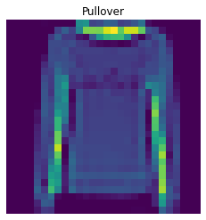
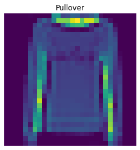
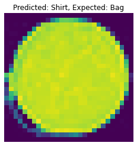
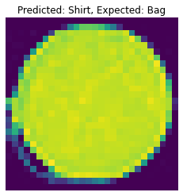
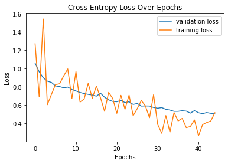
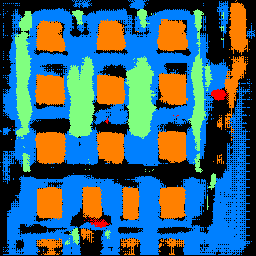
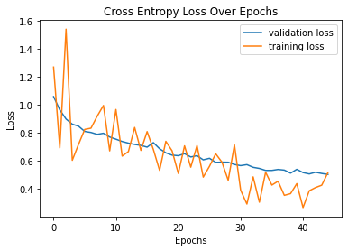

CS 194-26: Image Manipulation and Computational Photography
Kenny ChenProject 4: Classification and Segmentaion
Overview
We will solve classification of images in the Fashion-MNIST dataset and semantic
segmentation of images in mini Facade dataset using Deep Nets. The implementation was done
using PyTorch.
Part 1: Image Classification
We used the Fashion-MNIST dataset to train our model. This dataset has 10 classes, T-shirt/top,
Trouser,
Pullover,
Dress,
Coat,
Sandal,
Shirt,
Sneaker,
Bag,
and Ankle boot.
Architecture:
My architecture consisted of 2 convolutional layers with 32 channels each with size 5 kernels and padding of 2. These
convolutional layers are each followed by a ReLU and max pooling layer with size 2 kernels and stride of 2. I then
use 2 fully connected layers, with the first being followed by a ReLU. I used cross entropy loss and Adam as the optimizer
with a learning rate of .0009. I trained my network for 8 epochs.
Training and Validation Accuracy:
The following is the training and validation accuracy during the training process. I ended up with around 91% overall accuracy.
Per-Class Accuracy:
The following is the per-class accuracy of the classifier on the validation and test dataset:
Class
Validation Accuracy
Test Accuracy
T-shirt/top
0.850
0.828
Trouser
0.987
0.985
Pullover
0.878
0.875
Dress
0.949
0.926
Coat
0.770
0.721
Sandal
0.983
0.984
Shirt
0.841
0.829
Sneaker
0.959
0.970
Bag
0.983
0.977
Ankle boot
0.970
0.963
We can see that the T-shirt/top, Pullover, Coat, and Shirt classes were the hardest
to correctly classify. This is likely because these categories look very similar to each
other. Here we can see this more qualitatively. The left-side classes are the actual class while
the top classes are the predicted.
The following are 2 images from each class which the network classifies correctly, and 2 more images where it classifies incorrectly.
For many of these, it is easy to see how the network classified incorrectly. As stated before, some of the
classes have similar-looking clothing.
 

 

Learned Filters:
The following are the 32 learned filters for the first layer of the network. It is difficult to find any
meaning in these filters.
Part 2: Semantic Segmentation
This part of the project involved semantic segmentation of a dataset of facade images. Semantic
segmentation is the labeling of each pixel in an image with its correct object class. In this case,
we will be classifying parts of facade images in 5 different classes:
Model Architecture:
We used a network of 6 convolutional layers described as follows:
- 1. Use a 5x5 convolutional layer to go from 3 to 128 channels.
- 2. Apply a ReLU.
- 3. Apply a 2x2 max pooling layer.
- 4. Use a 3x3 convolutional layer to go from 128 to 256 channels.
- 5. Apply a ReLU.
- 6. Apply a 2x2 max pooling layer.
- 7. Use a 3x3 convolutional layer to go from 256 to 512 channels.
- 8. Apply a ReLU.
- 9. Apply a 2x2 max pooling layer.
- 10. Use a 5x5 transposed convolutional layer with stride 2 to go from 512 to 256 channels.
- 11. Use a 3x3 transposed convolutional layer with stride 2 to go from 256 to 128 channels.
- 12. Apply a ReLU.
- 13. Use a 3x3 transposed convolutional layer with stride 2 and output padding 1 to go from 128 to 5 channels.
Additionally, cross entropy loss was used and Adam was used as the optimizer with learning rate 8e-5 and weight
decay 1e-5. The network was trained for 45 epochs. The following is a plot showing both training and validation loss across iterations:

Average Precision:
The average precision for each class on the test data was as follows. The network seemed to have a particularly
hard time correctly finding pillars. Overall AP ended up being around 0.61.
Class
AP
Others
0.67
Facade
0.75
Pillar
0.20
Window
0.85
Balcony
0.56
All
0.61
Results:
Here are the results on some of the images from the test dataset:

It seems that the network oftentimes confuses the decorated exterior window ledges for balconies.
It also confuses vertical shapes with pillars, explaining the low AP of .20 for pillars.
The network does seem rather good at identifying windows, explaining the high AP value of .85 for windows.
The following is the output of running the trained model on an image I took of South Hall at UC Berkeley:
It gets all the windows right, but also falsely labels all the doors as windows. I'm unsure if they can be classified as
windows or not, given that they are all see-through doors. I'm not sure what can be classified as a pillar, but it seems
that it correctly classified the two main pillars around the entrance. For some reason, the network classified some parts of the
top of the building as a balcony despite there being none. Furthermore it classifies the step area as a balcony when it should not
have. The network also classified the grass as a facade when it should have been other. There are also small locations
where the network classified structures as pillars incorrectly.
Challenges
I found this whole project rather difficult, both conceptually and implementation-wise. I have virtually no
background in machine learning, so it was hard to understand anything in depth. I ended up having to rely
heavily on online tutorials and more knowledgable friends.
Conclusion
Despite challenges stated above, I found it very cool to see the output after training. I also rather enjoyed
improving my network over time, and liked looking at the output created by the network in the semantic segmentation
part of the project. Overall, I would say I have a better understanding of how these neural network architectures
are implemented in code, but I would still like a deeper understanding of what is happening.
Overview
We will solve classification of images in the Fashion-MNIST dataset and semantic segmentation of images in mini Facade dataset using Deep Nets. The implementation was done using PyTorch.
Part 1: Image Classification
We used the Fashion-MNIST dataset to train our model. This dataset has 10 classes, T-shirt/top, Trouser, Pullover, Dress, Coat, Sandal, Shirt, Sneaker, Bag, and Ankle boot.
Architecture:
My architecture consisted of 2 convolutional layers with 32 channels each with size 5 kernels and padding of 2. These convolutional layers are each followed by a ReLU and max pooling layer with size 2 kernels and stride of 2. I then use 2 fully connected layers, with the first being followed by a ReLU. I used cross entropy loss and Adam as the optimizer with a learning rate of .0009. I trained my network for 8 epochs.
Training and Validation Accuracy:
The following is the training and validation accuracy during the training process. I ended up with around 91% overall accuracy.
Per-Class Accuracy:
The following is the per-class accuracy of the classifier on the validation and test dataset:
| Class | Validation Accuracy | Test Accuracy |
|---|---|---|
| T-shirt/top | 0.850 | 0.828 |
| Trouser | 0.987 | 0.985 |
| Pullover | 0.878 | 0.875 |
| Dress | 0.949 | 0.926 |
| Coat | 0.770 | 0.721 |
| Sandal | 0.983 | 0.984 |
| Shirt | 0.841 | 0.829 |
| Sneaker | 0.959 | 0.970 |
| Bag | 0.983 | 0.977 |
| Ankle boot | 0.970 | 0.963 |
We can see that the T-shirt/top, Pullover, Coat, and Shirt classes were the hardest to correctly classify. This is likely because these categories look very similar to each other. Here we can see this more qualitatively. The left-side classes are the actual class while the top classes are the predicted.
The following are 2 images from each class which the network classifies correctly, and 2 more images where it classifies incorrectly. For many of these, it is easy to see how the network classified incorrectly. As stated before, some of the classes have similar-looking clothing.
Learned Filters:
The following are the 32 learned filters for the first layer of the network. It is difficult to find any meaning in these filters.
Part 2: Semantic Segmentation
This part of the project involved semantic segmentation of a dataset of facade images. Semantic segmentation is the labeling of each pixel in an image with its correct object class. In this case, we will be classifying parts of facade images in 5 different classes:
Model Architecture:
We used a network of 6 convolutional layers described as follows:
- 1. Use a 5x5 convolutional layer to go from 3 to 128 channels.
- 2. Apply a ReLU.
- 3. Apply a 2x2 max pooling layer.
- 4. Use a 3x3 convolutional layer to go from 128 to 256 channels.
- 5. Apply a ReLU.
- 6. Apply a 2x2 max pooling layer.
- 7. Use a 3x3 convolutional layer to go from 256 to 512 channels.
- 8. Apply a ReLU.
- 9. Apply a 2x2 max pooling layer.
- 10. Use a 5x5 transposed convolutional layer with stride 2 to go from 512 to 256 channels.
- 11. Use a 3x3 transposed convolutional layer with stride 2 to go from 256 to 128 channels.
- 12. Apply a ReLU.
- 13. Use a 3x3 transposed convolutional layer with stride 2 and output padding 1 to go from 128 to 5 channels.
Additionally, cross entropy loss was used and Adam was used as the optimizer with learning rate 8e-5 and weight decay 1e-5. The network was trained for 45 epochs. The following is a plot showing both training and validation loss across iterations:
Average Precision:
The average precision for each class on the test data was as follows. The network seemed to have a particularly hard time correctly finding pillars. Overall AP ended up being around 0.61.
| Class | AP |
|---|---|
| Others | 0.67 |
| Facade | 0.75 |
| Pillar | 0.20 |
| Window | 0.85 |
| Balcony | 0.56 |
| All | 0.61 |
Results:
Here are the results on some of the images from the test dataset:
It seems that the network oftentimes confuses the decorated exterior window ledges for balconies. It also confuses vertical shapes with pillars, explaining the low AP of .20 for pillars. The network does seem rather good at identifying windows, explaining the high AP value of .85 for windows.
The following is the output of running the trained model on an image I took of South Hall at UC Berkeley:
It gets all the windows right, but also falsely labels all the doors as windows. I'm unsure if they can be classified as windows or not, given that they are all see-through doors. I'm not sure what can be classified as a pillar, but it seems that it correctly classified the two main pillars around the entrance. For some reason, the network classified some parts of the top of the building as a balcony despite there being none. Furthermore it classifies the step area as a balcony when it should not have. The network also classified the grass as a facade when it should have been other. There are also small locations where the network classified structures as pillars incorrectly.
Challenges
I found this whole project rather difficult, both conceptually and implementation-wise. I have virtually no background in machine learning, so it was hard to understand anything in depth. I ended up having to rely heavily on online tutorials and more knowledgable friends.
Conclusion
Despite challenges stated above, I found it very cool to see the output after training. I also rather enjoyed improving my network over time, and liked looking at the output created by the network in the semantic segmentation part of the project. Overall, I would say I have a better understanding of how these neural network architectures are implemented in code, but I would still like a deeper understanding of what is happening.